Flexbox
Flex Container
1
Flex Item
2
3
4
Flexbox finally unlocks a powerful layout system that is suitable for
whole page layouts!
MCC: Section 1
display: flex;
flex-wrap: wrap;
display: flex;
flex-direction: column;
flex-wrap: wrap;
flex-flow is a combination shorthand for
flex-direction & flex-wrap
flex-flow: row wrapflex-flow: column wrap-reverseflex-flow: row nowrapjustify-content ➡ Main Axisalign-items ➡ Cross Axisgap: <length>;
gap: 1rem;
/* independently set
top & bottom gap
and left & right gap */
gap: 1rem 2rem;
The order property can control where a flex-item will be
in the flex-container...
even though the order of the HTML doesn't change!
.flex-item {
order: -1;
}.flex-item
These *may or may not* come in handy for you.
flex-basis
- sets a starting width;
flex-grow
- proportion of available space to be allocated to this flex-item
flex-shrink
- tells this flex-item to shrink as available space shrinks
align-self
- aligns this flex-item only
selector {
display: flex | inline-flex;
flex-direction: row | row-reverse | column | column-reverse;
flex-wrap: nowrap | wrap | wrap-reverse;
flex-flow: <flex-direction> || <flex-wrap>
justify-content: flex-start | flex-end | center | space-between | space-around;
align-items: flex-start | flex-end | center | baseline | stretch;
align-content: flex-start | flex-end | center | space-between | space-around | stretch;
gap: <length>;
}selector {
order: <integer>;
flex-grow: <number>; /* default 0 */
flex-shrink: <number>; /* default 1 */
flex-basis: <length> | auto; /* default auto */
flex: none | [ <flex-grow> <flex-shrink>? || <flex-basis> ]
align-self: auto | flex-start | flex-end | center | baseline | stretch;
}Flexbox is ideal for nav bars or footers, but can be used for many other things including full page layouts!
Defines a two-dimensional grid-based layout system, optimized for user interface design and complex content layout.
There are a number of terms I will constantly refer to throughout this talk, so let’s make sure everyone is on the same page. Grid lines are the horizontal and vertical lines that form the basis of the grid structure, and can be referred to by their numerical index, which starts from 1.
Each space between grid lines are known as grid tracks, which make up the rows and columns of the grid, and represent the spaces your items appear in.
The grid cell is a single unit of the grid and is made up of 2 adjacent row lines and 2 adjacent column lines. By default, each grid item takes up 1 grid cell. A grid area is made up of multiple grid cells.
The best part about Grid, is the ability to define grid gaps, which are the gutters between grid tracks. Fun fact, grid gap wasn't in the original specification until Rachel Andrew championed it during one of her conference talks.
One of the specification writers, Elika Etemad, was in the audience and they worked together to get this feature into the specification. So the next time you use grid gap, remember you have Rachel and Elika to thank for this excellent feature.
Both Based on the container-child relationship
“Grid works from the container in, other layout methods start with the item”
—Rachel Andrew
My favourite way of explaining the CSS grid mental model comes from Rachel Andrew, who describes it as such: “Grid works from the container in. All other layout techniques start from the item first.”
Let’s illustrate this with some simple examples, which will also serve as the introduction to the most basic set up for using CSS grid.
For all 3 previous techniques, there is no actual grid. It mimics a grid because we've forced the items to line up with each other.
“Grid is the only layout technique that establishes a relationship between rows and columns of grid items.”
—Rachel Andrew
Unique among CSS Layout systems, the dimensions for rows and columns are defined on the parent container instead of inferred from the child items
I no longer think of grid versus flexbox as 2D versus 1D. It's a question of should the container have control of the layout more than its content, or should the content control the layout. - Kevin Powell
But for Grid, the dimensions for rows and columns are defined on the parent container instead. The grid is real.
Before CSS grid, we've always tried to size our elements as best we could, then crossed our fingers and hoped the browser would render them in the right place. But now with grid, we can control exactly where our elements should go.
Define your grid container.
display: gridgrid-template-columns grid-template-rowsPlace grid items in the grid.
grid-column grid-rowThe grid formatting context only applies to the direct child elements
body {
display: grid;
grid-template-columns: 25% 25% 25% 25%;
grid-template-rows: 10vh 80vh 10vh;
}A grid container is defined by setting the display to grid on an element. This creates a grid formatting context for its content, which are laid out into a grid. The grid formatting context only applies to child elements and does not extend to grandchild elements and beyond.
For example, applying display: grid to the body
element, results in the 4 child elements, header, main, aside and
footer, becoming grid items. However, the content within the main
element are not grid items.
There are numerous values we can use to define the size of our grids. There are those which are familiar, fixed units like pixels or ems and relative units like percentages or viewport units. Now, we also a new flexible unit known as fr or fractional unit, which I will cover in more detail later.
.grid-container {
display: grid;
/* three columns */
grid-template-columns: 150px 150px 150px;
/* two rows */
grid-template-rows: 150px 150px;
/* The browser creates an implicit grid
to hold itemsplaced outside of it. */
}
.item {
/* grid-column-start: 5;
grid-column-end: 6; */
grid-column: 5 / 6;
/* grid-row-start: 2;
grid-row-end: 3; */
grid-row: 2 / 3;
/* you can use -1 to reference
the last explicit grid track */
grid-row: 2 / -1;
}
One more thing I want to mention is the concept of an implicit grid.
The explicit grid is the one we define using
grid-template-columns and
grid-template-rows. But there's nothing stopping us
from placing an item outside the bounds of this grid. What happens
then?
In this simple 3×2 grid, the grid column lines only go up to 4. But if we place an item starting on grid line number 5, the browser will add 2 implicit columns (shown by the purple dashed lines on the grid) to accommodate this item. It's really quite smart.
Let's see how this works. grid-row and
grid-column are actually shorthand for their respective
start and end properties.
By default, each grid item will take up 1 grid cell, so if I only
put 1 value for the grid-column or
grid-row, that will be the start position.
Of course, I can make the grid item span multiple rows or columns by specifying an end value as well.
fr represents a
fraction of the
free space in the grid
container.
min-content gives the
smallest width of the grid item
content (wraps).
max-content gives the
largest width of the grid item
content (does not wrap).
.grid {
display: grid;
grid-template-columns: 100px 1fr min-content max-content;
}
An fr unit represents a fraction of free space
available. A common use case that fr units can solve is
for responsive uniform grids that need to adjust to the width of the
viewport.
For layout methods that revolve around the width of the grid item, multiple media queries are necessary because the width of each item has to be explicitly stated depending on the width of the viewport.
With the fr unit, we are essentially ceding control of the sizing of each grid item to the browser, allowing the browser to figure out how large each grid item should be based on the parameters we provide through some new functions that CSS grid introduces.
.container {
display: grid;
grid-template-columns: repeat(3, 3fr 2fr);
/* grid-template-columns: repeat(6, min-content); */
/* grid-template-columns: repeat(6, max-content); */
}fr unit, all the available space
is divided up accordingly. The grid then grows and shrinks together
with viewport because it will occupy all the free space available in
the container. One of the new functions CSS grid gives us is the
minmax() function. And it allows us to do something we
never could before, which is the define a range of values. Now I can
tell the browser that I want my grid columns or rows to be between a
value of x and y, and the browser can figure out exactly what that
value should be.
repeat() function let's us repeat patterns of track sizes
so we won't end up with ridiculously long lines of column or row
sizes.
auto-fill vs. auto-fit
MDN
Allow browser to create a number of tracks depending on grid track sizes.
Used with the repeat() function.
grid-template-columns: repeat(auto-fill, 100px);grid-template-rows: repeat(auto-fit, 100px);auto-fit collapses empty tracks.
Show the codepen example with the grid inspector ON, so the implicit grid tracks are shown for auto-fill.
The repeat() function also takes in the keywords of
auto-fit and auto-fill, which are very
similar.
Both these keywords tell the browser to generate the number of
tracks required based on the track list specified as the second
argument. The minor difference is that for auto-fit,
any empty tracks are collapsed.
This becomes more evident if you're using a flexible range for track sizing.
In this example, I have asked the browser to make me columns that
are at least 2.5ems wide, but can grow if free space permits. With
the keyword set to auto-fill, because the space can
contain 8 2.5em columns, even though I didn't have enough grid items
to fill up the last 2 columns, the columns are still there.
When I change it to auto-fit, the last 2 columns are
collapsed and the columns that do contain grid items grow to fill up
the empty space.
.container {
display: grid;
gap: 10px;
grid-template-columns: repeat(auto-fill, minmax(10em, 1fr));
/* auto-fit can work above too */
}No Media Queries with CSS Grid / and Flexbox, too!
For this example, I'm telling the browser that when the viewport size shrinks, I want to cap the shrink of each column at 10ems but if there's extra space, grow all my columns equally. By using auto-fill (or auto-fit), the browser will calculate how many columns fulfil my requirement. When the viewport size changes, the number of columns will decrease or increase until everything fits.
And because the maximum value is a flexible unit, if there is an excess of space, like 6ems worth, all the columns will grow equally to fill up that extra space. And not a single media query needed to be written.
You might have noticed that, although I explained each feature individually, they are so much more useful when used in combination. Team sport, remember?
These properties give you control of implicit grid tracks.
With grid-template-areas, creating responsive layouts
becomes a little more convenient as well.
Here I have a recreation of a Braun HiFi print poster which was originally laid out in landscape. But on the web, that same layout will break when the viewport starts to narrow. So we'll need to adjust the layout when that happens.
Using grid-template-areas makes handling responsiveness
easier than “traditional” techniques.
This is a real-world example of modifying the layout by just changing the grid itself. I've assigned each “section” its own named grid area. When the layout is too narrow for the original wide design, I don't change the sizing of the items, instead, I change the grid itself.
When it hits yet another breakpoint, the grid is morphed yet again. I find this to be a rather convenient solution for a relatively common use-case.
.article {
grid-gap: 0.5em;
grid-template-columns: 50% 50%;
grid-template-areas: "title title"
"text text"
"key key"
"detail1 detail2"
"detail3 detail4";
}
@media screen and (min-aspect-ratio: 1/1) and (min-height: 22em) {
.article {
grid-template-columns: 18.75em 1fr 1fr 1fr;
grid-template-rows: repeat(3, calc((100vh - 3em) / 3));
grid-template-areas: "title detail1 key key"
"text detail2 key key"
"text detail3 detail4 braun";
}
}
@media screen and (min-aspect-ratio: 8/5) and (min-height: 36em) {
.article {
grid-template-columns: 17.5em 1fr 3fr 1fr 1fr;
grid-template-rows: repeat(3, calc((100vh - 3em) / 3));
grid-template-areas: "title . key . ."
"text detail1 key detail2 detail3"
"text . . detail4 .";
}
}This is the final end result, and you can see how the layout changes with the viewport.
I'm going to make the assumption that most people have used media queries in some capacity before. The most common media queries are width-based. Occasionally, you may see a height-based media query or 2. Has anyone used the aspect-ratio media query before?
In the current specification, there are 13 media features that can be used as conditionals, including things like orientation, colour, resolution and so on. The design I'm showing in this demo is a good use case for the aspect-ratio media query.
Aspect-ratio media queries come in handy when relative proportions are important for your layout. And we can always combine multiple media queries to cater for different environments.
.grid-container {
display: grid;
grid-template-areas: "logo stats"
"score stats"
"board board"
"... controls";
}
.logo { grid-area: logo; }
.score { grid-area: score; }
.stats { grid-area: stats; }
.board { grid-area: board; }
.controls { grid-area: controls; }
While we're at the topic of naming things, we can also name grid
areas. The syntax of the grid-template-areas property
provides a visualisation of the structure of the grid, making the
overall layout of the grid container easier to understand.
We then place items in their respective areas using the
grid-area property on the item.


| Property | Axis | Aligns | Applies to |
|---|---|---|---|
justify-content |
main/inline |
content within element |
block containers, flex containers and grid containers |
align-content |
cross/block | ||
justify-self |
inline |
element within parent |
block-level boxes, absolutely-positioned boxes and grid items |
align-self |
cross/block |
absolutely-positioned boxes, flex items and grid items |
|
justify-items |
inline |
items inside box |
block containers and grid containers |
align-items |
cross/block | flex-containers and grid-containers |
Source: CSS Box Alignment Module Level 3
For me, I associate justify with the direction that
text flows, because I've been justifying text in Microsoft Word
since version 97. And if justify is for inline direction, then align
must be for the other direction.
Directions are not the most tricky part. It's the second word in
these properties, content, item and
self, that seem to confuse people. This table
summarises the 6 box alignment properties that are regularly used
when building with Flexbox and Grid.
The justify-content and
align-content properties are known as
content-distribution properties. These properties
are relevant when the container is larger than the total width or
height of the grid rows and columns.
As we can see from this example, there is some space to the right and bottom of the grid items. It is possible to set the alignment of the rows and columns with respect to the entire grid container.
We can position the grid rows and columns within its container using
3 values, start, center and
end. We can also adjust the space between rows and
columns with space-around,
space-between and space-evenly.
| Values | center |
start |
end |
space-around |
space-between |
space-evenly |
|---|---|---|---|---|---|---|
justify-content |
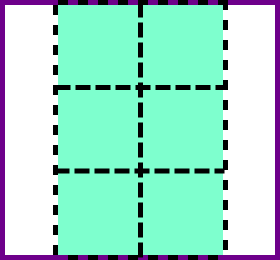 | 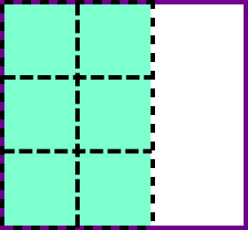 | 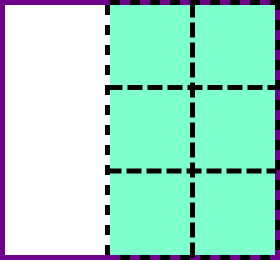 | 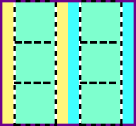 | 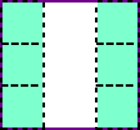 | 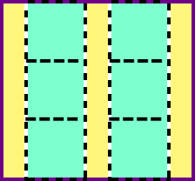 |
align-content |
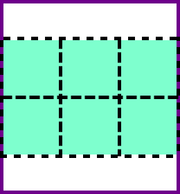 | 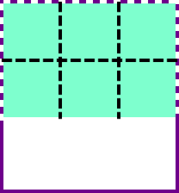 | 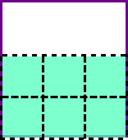 | 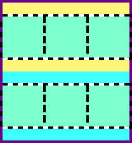 | 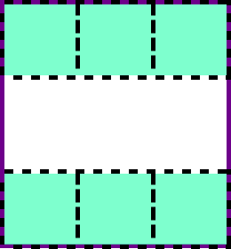 | 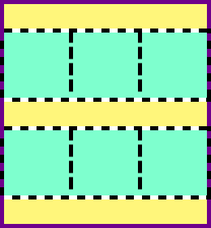 |
It's probably easier to refer to this table.
space-around puts an equal amount of space on both
sides of the row or column, so the spaces at the edge of the
container will be half of the spaces between inner rows or columns.
space-between distributes all the tracks evenly in the
grid container with the first and last rows or columns flush with
the edges of the container.
space-evenly is currently only supported in Chrome 60
onwards and Firefox 52 onwards. It distributes the grid tracks
evenly within the grid container such that the space between any 2
adjacent grid tracks are the same.
If everybody is completely lost now, please trust me when I say, it gets easier with experience.
When I started building this out, my first instinct was to use the
justify-self and align-self properties to
adjust the content positions. Nice try, but it was a no go.
The border property applies onto the grid item. Any grid alignment property other than stretch will make the size of the grid item fit to its contents.
Any borders applied to grid items naturally fit the grid item’s contents, so I couldn’t do that, it messed up the design.
display: flex on the grid item,
we can now use flex alignment properties applied on the flex container
to position the grid item's content accordingly.
The justify-self and align-self properties
are known as self-alignment properties.
justify-* is for the main or inline axis, which is the
direction of text flow, while align-* is for the cross
or block axis, which is the direction block boxes are stacked.
These properties allow us to control how the content of each grid
item is aligned within the grid area it's been allocated to. The
default state is stretch, where the content stretches
to fill the entire grid area. We can adjust the alignment of content
within the grid item with start,
center and end.
Finally, we have the align-items and
justify-items properties, which set the default
align-self and justify-self behaviour of
all the items within the grid.
grid-template-columns: [first sidebar-start] 250px [sidebar-end content-start] 1fr [content-end last];
grid-template-rows: [first header-start] 100px [header-end content-start] 1fr [content-end footer-start] 100px [footer-end last];Other than using a numerical index to refer to specific grid lines, we can give them names as well. Line names can be any string except “span”, which is a keyword. There is no limit to how many names you can assign to a particular line either.
Another handy feature with grid lines is the negative index. That means if you need to refer to the last grid line, and you don't know how many grid lines there are, you can use -1 to always get the last grid line.
So say I want something to go into the big main area, I would set
both the grid-row and grid-column to
2 / 3, or use the line names
content-start / content-end.
Grid Overview & 12 Col Grid Example
.container {
display: grid;
grid-template-columns: repeat(9, 1.25em);
grid-template-rows: repeat(6, 1.25em);
}
h2 {
grid-row: 3 / 5;
grid-column: 1 / 10;
}
.container::before {
grid-row: 1 / 7;
grid-column: 1 / 7;
}
.container::after {
grid-row: 1 / 7;
grid-column: 4 / 10;
}Here's a simple example of overlap, just two circles behind a header. The code here is simplified to show only the placement properties.
Pseudo-elements are treated as children. So the two circles here are pseudo-elements of the grid container, which have been explicitly placed to overlap. Then the header overlaps them both.
The placement code is more intuitive than using absolute positioning and you don't need to do a lot of complicated math to get the alignment just right no matter how you resize the browser.
Design credit: Drew Sullivan
One thing I noticed after I started building with CSS grid is that I started to sketch my designs on pencil and paper a lot more. Because for grid, you plan the entirety of the layout beforehand, so it helps to have the big picture view upfront.
This also helps me think about how the track sizing should be done. Which tracks should be flexible, which should have a defined width, or even range of widths. Yes, it is a bit more thinking and planning than before, but the end result is also much nicer.
To me, markup always comes first. So I'd start off with every element that needs to be displayed, the title, the various bits of text, the image and so on.
Then, based on the design, I'd add in some base styles. Nothing
amazing, just the fonts, colours, text formatting. Browsers do apply
their own styles, and usually I reset margins and paddings, as well
as set the box-sizing for all elements to
border-box. Make life easier, I find.
“Websites do NOT have to look the same in every browser.”
So, I've been going on for quite a bit now, and even if you think whatever I've been saying is boring, and doesn't benefit your life in any way at all, I want you to remember this point.
Websites do not have to look the same in every browser. Because the web is not a static medium, and it is up to the people like us who create things on the web to change people's mindsets. Okay, the uninterested can go back to being bored now.
main {
max-width: 45em;
margin: 0 auto;
position: relative;
padding: 1em;
}
:placeholder, main {
display: block;
}
h1 {
margin-bottom: 0.25em;
}
h2, .about {
margin-bottom: 1em;
}
a {
margin-bottom: 2em;
}
button {
padding: 1em 2em;
position: absolute;
right: 1em;
bottom: 1em;
}I did not just put that slide in as a time marker, folks. The point I was trying to make is that rather than spending extra effort wrangling every pixel into place, why not embrace the dynamism of the web? The best part about the web medium is its ability to layer on additional functionality depending on the browser on which your page is being rendered.
I genuinely believe that web pages don't need to look exactly the same across every browser or device but I do believe no layout should be broken. So the base layout should utilise properties that have almost full support. In this case, I'm really just letting everything stack on top of each other, with some minor positioning at the bottom.
Browsers that do not support grid will get this layout instead.
@supports
@supports (grid-column: 1) {
main {
padding: 0;
display: grid;
grid-template-columns: 2fr minmax(10em, max-content) minmax(14em, max-content) minmax(1em, 1fr) fit-content(28em) calc(2em + 0.5vw);
grid-template-rows: 35vh 40vh 15vh 10vh;
}
h1 {
grid-column: 3 / 6;
grid-row: 1 / 2;
}
h2 {
grid-row: 1 / -1;
grid-column: 6 / 7;
color: $text;
}
.about {
grid-column: 5 / 6;
grid-row: 2;
align-self: end;
}
img {
grid-column: 1 / 4;
grid-row: 1 / 4;
}
button {
grid-column: 2 / 3;
grid-row: 4 / 5;
padding: 0;
}
}
Now comes the actual grid code. I chose to go with flexible units
like fr and viewport units because I wanted the layout to fully
occupy the window without overflowing, when space allowed. So if you
look at my grid-template-columns property, it looks a
little nuts if you've never used grid before.
However, once you start experimenting with the different functions and values, I promise they will make sense to you. I have a friend who does webVR, and he once said that until you put on the headset, you don't really know VR. This is somewhat similar. You need to feel the grid.
A conditional group rule whose condition tests whether
the user
agent supports CSS property-value pairs.
@supports, otherwise
known as feature queries. And they are defined as such, conditionals
that test if the browser supports a particular CSS feature.
.selector {
/* Styles that are supported in old browsers */
}
@supports (property:value) {
.selector {
/* Styles for browsers that support the specified property */
}
}
And this is how a feature query looks like. The conditional checks
if the browser supports a particular property or not. If it doesn't,
the entire block within the @supports rule is ignored.
This means we start off with the basic layout that works everywhere. It could be a flexbox-based layout, or even single column, maybe largely browser default UI elements, that sort of thing. Then we layer on styles based on the features we want to use. Like what we saw in the previous example.
By organising our code in this manner, the browsers that do not support feature queries or the specified property still get styled, while those that do get a different look. We're making use of the ‘C’ in CSS. Call it ‘Cascading Web Design’. If this concept ever takes off, remember you heard it here first.
@supportsSupport for feature queries is really good, with coverage in over 90% of browsers, including Opera Mini. But you might notice that Internet Explorer does not, and will not ever get it.
So here is where a decision has to be made, and it will differ from project to project, on whether it is acceptable to forgo some of the features that IE11 does offer and serve up a more basic fallback instead.
Again, there is no definitive answer to this until a proper discussion with relevant stakeholders arrives at an acceptable conclusion.
header::before {
content: 'For legacy browsers, it renders a ./fallback.png';
display: inline-block;
background-color: rgba(253, 182, 182, 0.75);
font-size: initial;
max-width: 36em;
color: #000;
padding: 0.5em;
}
header > * {
display: none;
}
header {
background-color: $background;
background-image: url('./fallback.png');
background-size: contain;
background-repeat: no-repeat;
background-position: bottom;
overflow: hidden;
max-height: 60vh;
position: relative;
}This next example is a header design. I got it from a CSS tricks article and since it was originally an image anyway, you can think of this as an enhancement.
The fallback code here serves up an image, the original image used on the site, actually. This is the “universal” code, i.e. what all browsers will load regardless.
@supports (display: flex) {
header::before {
content: none;
}
header {
background-image: none;
}
.grid {
display: block;
}
.title {
color: $txt-light;
display: flex;
align-items: center;
justify-content: flex-end;
font-size: 2.5em;
z-index: 1;
padding-right: 0.25em;
}
.time {
color: $txt-dark;
display: flex;
align-items: center;
justify-content: center;
padding: 0 0.5em;
}
.grid__item:nth-of-type(1) {
background-color: $blue;
width: 30vw;
}
.grid__item:nth-of-type(2) {
background-color: $purple;
width: 45vw;
}
.grid__item:nth-of-type(3) {
background-color: $yellow;
width: 60vw;
position: relative;
z-index: 2;
}
.time {
width: calc(100% / 9);
float: left;
padding: 1em;
}
.time:nth-child(8) {
position: relative;
}
.border {
width: 0.2em;
background-color: $red;
position: absolute;
top: 0;
height: 100%;
left: calc((100% / 9) * 7);
}
}@supports (display:grid) {
.time {
grid-row: 7;
}
.grid {
display: grid;
grid-template-columns: repeat(9, 1fr);
grid-template-rows: repeat(3, 2em) repeat(3, minmax(10vmin, 3em)) 2em 2em 10vh;
grid-gap: 0.125em;
position: relative;
}
@media screen and (min-width: 480px) {
.grid {
transform: rotate(-30deg) translateX(5vh);
grid-template-rows: repeat(3, 2em) repeat(3, minmax(10vmin, 3em)) 2em 2em 50vh;
}
}
@media screen and (min-width: 640px) {
.grid {
transform: rotate(-30deg) translateY(-15vh);
}
}
.grid__item:nth-of-type(1) {
grid-row: 4;
grid-column: span 3;
width: auto;
}
.grid__item:nth-of-type(2) {
grid-row: 5;
grid-column: span 5;
width: auto;
}
.grid__item:nth-of-type(3) {
grid-row: 6;
grid-column: span 7;
width: auto;
}
.border {
grid-row: 1 / -1;
grid-column: 8;
margin-left: -0.125em;
width: 1px;
border-left: 0.2em solid $red;
left: initial;
}
.square1 {
grid-column: 2;
position: relative;
}
.square2 {
grid-column: 3;
grid-row: 2;
position: relative;
}
.circle {
grid-column: 2;
grid-row: 3;
position: relative;
}
.square3 {
grid-column: 8;
grid-row: 6;
position: relative;
}
.square4 {
grid-column: 6;
grid-row: 8;
position: relative;
}
}This second feature query is for the latest browsers, which support all the things. This layout's use of vertical whitespace, and the need to maintain alignment of its individual elements as the viewport changes, makes it a perfect candidate for CSS grid.
We can now write code that is not browser-specific, but feature-specific. Which means we don't have to keep revisiting our code every time the browser updates. The design updates itself, together with the browser, how cool is that?
Jen Simmons and Rachel Andrew have done a lot for both developing layout on the web, as well as educating the web development community about it. Rachel Andrews has a CSS layout course which is completely online, and Jen Simmons has a wonderful collection of demos which you can check out.
I think everyone should build up their own collection of demos, because that's the best way to learn and familiarise ourselves with CSS in general.